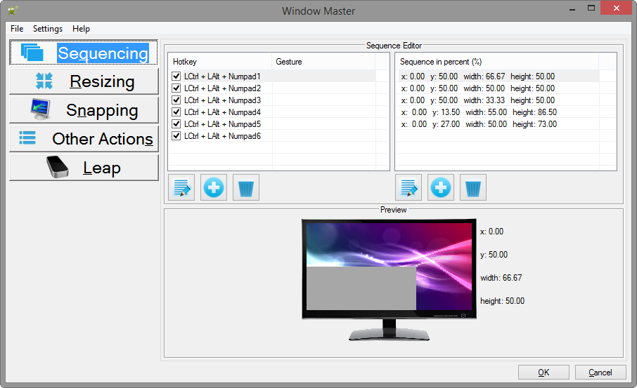

Windows Master is primarily a window management application. It is certainly not the first of its kind. A few other notable window managing applications include: Display Fusion, WinSplit, and WindowPad.
All three applications have notable features. WinSplit pioneered the idea of sequencing. Display Fusion is similar but has an arguably overwhelming number of actions that must be configured. Finally, WindowPad is a hybrid of the two, but it is developer-friendly instead of user-friendly.
Windows Master is an augmentation of all three applications. The most noteworthy feature is the utilization of the Leap Motion Controller. This brings an immersive experience where you may control your computer by simply a wave of your hand. Other notable features include: utilization of sequencing, orderly window movement, window snapping (or anchoring), and also a handy quick menu to give instant access to numerous window functions.
There's a key principle used throughout Windows Master that should be understood. Namely, the context for a given action is the currently active window -- that means the one window which is currently focused; furthermore, each action is monitor-sensitive. For example, Snap to Center will center the active window within the monitor the window is currently on. For more information, refer to the list at the bottom of this document.
When Windows Master is initially launched, the following view is displayed:

Every action in Windows Master may be mapped to a hotkey and/or a Leap Motion gesture. Notice the tabs on the left: Sequencing, Resizing, Snapping, Other Actions, and Leap. These are categories for actions within Windows Master. Below are links with explanations for each tab, how they work, and how to configure them.
Below are links to information crucial for understanding how to effectively use Windows Master.